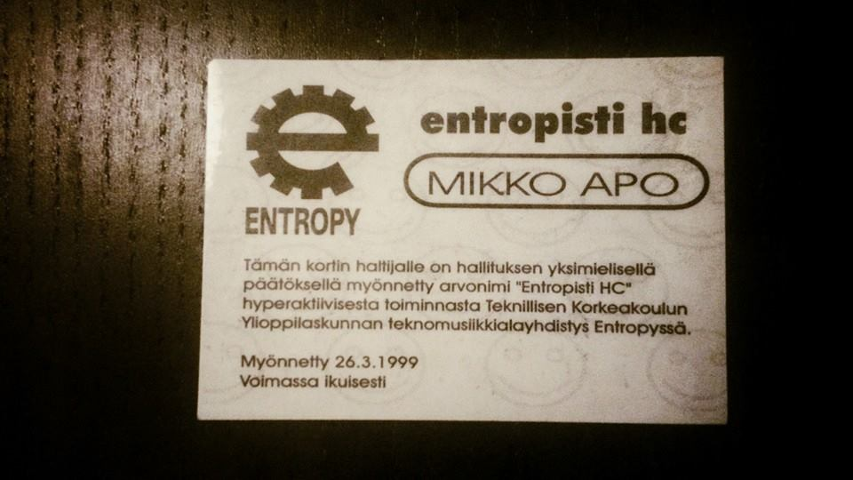

Mikko Apo is part of Entropy's old guard. He joined Entropy in 1996 for F-Trap ( http://entropy.fi/rave/f-trap/ ) and since then he's been part of the Entropy crew, helping at events and playing dj sets. He's played serious marginal techno, uplifting house, trance, drum'n'bass, ambient and chill out so watch out for the "best of" set he's going to play at E20V.
How and when did you start listening to electronic music?
I think it was probably somewhere around 1990. A few things seemed to happen at the same time. Radio stations like Radio City started to play electronic music. That was probably my first connection to electronic music dance. I had also bought an Amiga 500 and downloaded demos that had pretty good music in them.
My mother's record collection is probably also a huge influence. My favorites back then included Roxy Music's Avalon (1982, Brian Eno playing synths!), Toto's Africa (1982), Herbie Hancock's Rockit (1983) and reggae from Jimmy Cliff and Bob Marley.
In 1992 I went to my first rave which was this huge event at Kaapelitehdas called Suomitehdas. I don't remember much from the evening, except I was really tired because the rave part started really late. A few weeks after that I went to an event at Jäähalli, Technoflight. That's when everything clicked. I spent fours hours at the dance floor. For me it was almost like a spiritual awakening, I had found my future on the dance floor. After that I remember doing mix tapes to be played at school during lunch breaks.
http://www.discogs.com/Dance-Nation-Technoflight-EP/release/403152

How did you get involved in the electronic music scene?
In 1993 I turned 18 and as a birthday present Prodigy and LFO were playing at Kulttuuritalo. Dj Ender and Dj Jokke had a club called Deep running at Botta's top floor. It was my favorite club because they played techno and had very interesting dj guests.
I also became friends with the a group of people who formed an organization called Usva. They organized underground rave parties between 1994 and 1995 and I got to help them. I remember working at the door, carrying lighting equipment and eating freshly baked bun with Dave Clarke at an after party.
- http://alpha.klubitus.org/flyer/6332
- http://theprodigy.info/articles/rumbaoct93.shtml
- http://www.damicon.fi/fri/1994/flyers/wonderland.txt
- http://www.damicon.fi/fri/1994/flyers/final-connection.txt
- http://www.damicon.fi/fri/1994/flyers/wonderland-2.txt
- http://alpha.klubitus.org/flyer/6325
In 1996 I started to DJ at Stonewall. I didn't have money to buy my own equipment, so I went to the club before it opened and practiced there. As I got better at mixing and got new records I started playing at some of the clubs running at Stonewall.
Why did you join Entropy?
I think I heard about Entropy at the right time and I had the right experience. I knew something about how to organize events and I could play dj sets. Finding a nice group of people who were in to the same kind of things was really nice. I think Entropy also appreciated the fact that I was happy to loan my own dj mixer and working dual dj cd player.
What have you done at Entropy?
So many things and so many happy memories. I've been helping out at events, I've played dj sets. I ran Radio Entropy for one and half years. It was a weekly radio show at OUBS. In the early years I was responsible for DJs. Once I ended up on national TV's morning show talking about Entropy and raves to about 500 000 viewers.
What are your most favorite Entropy memories?
That feeling when you realize everything is working and everyone is doing their best to get the event working. My dj sets in all those weird locations. All the friends I've gotten through Entropy. How I got my first real job thanks to Entropy and how I got a job at the best work place in Europe thanks to Entropy.
AND this:
AND this:

Would you join Entropy again?
Yes, definitely. It's been blast!